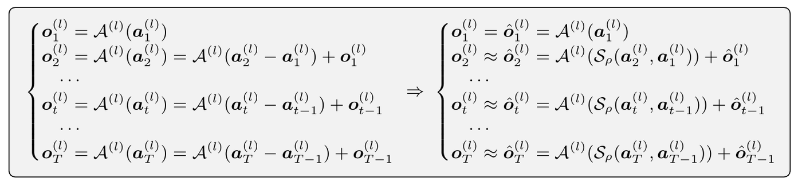
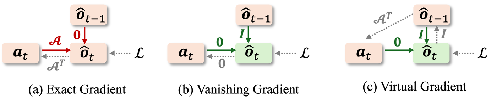

ICLR 2026
Fine-Grained Iterative Adversarial Attacks with Limited Computation Budget
North Carolina State University

In one paragraph
Given a fixed compute budget, cutting PGD iterations weakens the attack. Spiking-PGD instead recomputes a layer only when its input has changed enough, reuses the cached output otherwise, and keeps the attack gradient alive with a virtual surrogate gradient.
This work tackles a critical challenge in AI safety research under limited compute: given a fixed computation budget, how can one maximize the strength of iterative adversarial attacks? Coarsely reducing the number of attack iterations lowers cost but substantially weakens effectiveness. To fulfill the attainable attack efficacy within a constrained budget, we propose a fine-grained control mechanism that selectively recomputes layer activations across both iteration-wise and layer-wise levels. Extensive experiments show that our method consistently outperforms existing baselines at equal cost. Moreover, when integrated into adversarial training, it attains comparable performance with only 30% of the original budget.
Try it
Each cell is one layer of ResNet-18 at one PGD iteration on CIFAR-10. Values are the measured relative activation change \(\|a_t-a_{t-1}\|/\|a_t\|\) from Fig. 1 of the paper. Move the threshold to see which layers fire under the spiking gate, and how early stopping would spend the same number of layer computations.
Spiking-PGD spreads computation across all ten iterations and spends it where activations still move, mostly the deep layers L14 to L18 in early steps. Early stopping spends the same amount on the first few iterations only. This is an illustration on measured statistics; in a real attack the activation changes also depend on which layers were reused.
Method
Across PGD iterations, hidden activations quickly stop changing, and they settle at different rates in different layers. Adversarially trained models change even less. Recomputing every layer at every step wastes most of the budget.

Let \(\Delta\in\{0,1\}^{T\times L}\) mark whether layer \(l\) is recomputed at iteration \(t\). Early stopping is the block-structured special case, so its optimum can never beat the fine-grained one: \(V_{\text{coarse}}\le V_{\text{fine}}\).
For a linear layer, the new output is the old output plus the layer applied to the activation residual. A gate with one threshold \(\rho\) fires only when that residual is large, and otherwise reuses \(\hat o_{t-1}\). This searches the exponential mask space with a single cheap rule.

Reusing a cached output cuts the autograd graph, and the gradient to the input vanishes. We route the upstream gradient back through the layer's adjoint, \(\partial\mathcal L/\partial a_t=\mathcal A^{\top}(\partial\mathcal L/\partial\hat o)\), using conv2d_input for convolutions and a matrix product for linear layers.

Results


Citation
@inproceedings{hou2026fine,
title={Fine-Grained Iterative Adversarial Attacks with Limited Computation Budget},
author={Hou, Zhichao and Gao, Weizhi and Liu, Xiaorui},
booktitle={International Conference on Learning Representations},
volume={2026},
pages={75235--75250},
year={2026}
}